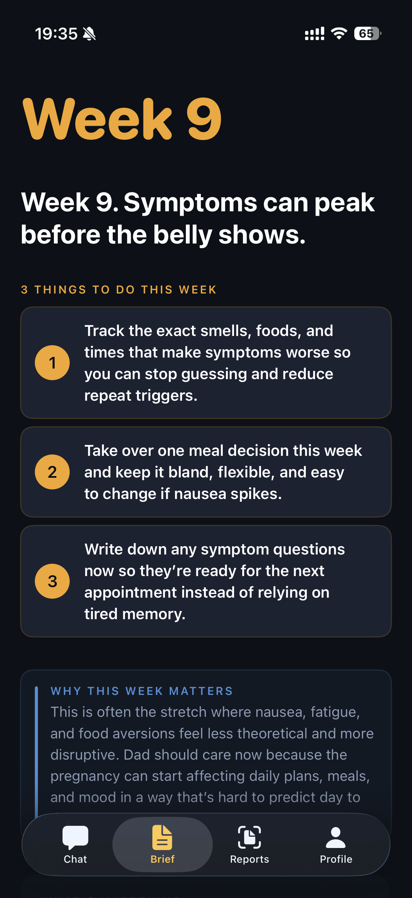
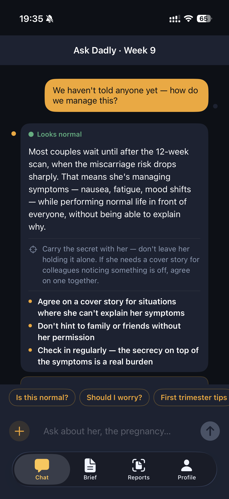
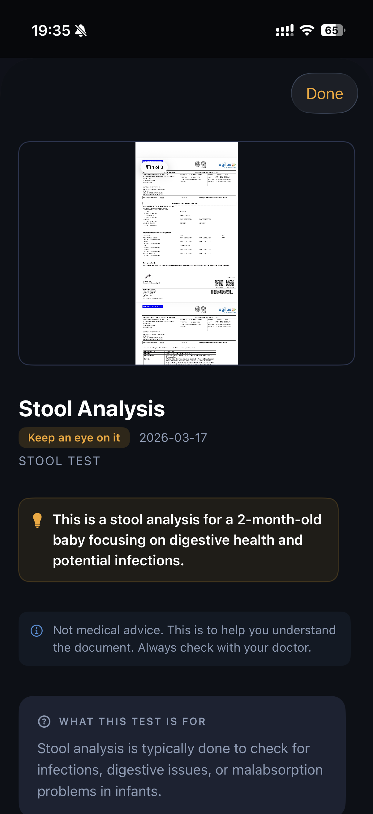

For expecting and new dads
Clear answers for dads
— through pregnancy, newborn chaos, and everything after.
From your partner's symptoms and reports during pregnancy to feeding, sleep, poop, crying, and health concerns after birth — Dadly helps you know what matters and what to do next.
$4.99/month · 7-day free trial · Cancel anytime


